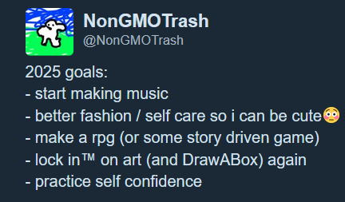

p r o g r e s s _ u p d a t e s
march 4th, 2025
this happened two days ago but i've been very very busy and so i haven't gotten around to writing here until today. for feburary i decided to take a stab at trijam and made a very..... uhhh... "interesting" game. i think the concept might have some potential though? not sure. if you're reading this rn, please go play it and give me your opinion, i would really appreciate it!! i'm going to give it some time to decide wheither or not i like it enough to make into a full game. in the meantime, i need to lock in on homework (improper integrals are kicking my butt), but spring break is this month so i will probably have a higher output during that time, hopefully. but for the immediate future, things will be difficult... but i will try my best as always. i have been doing a pretty decent job getting back into drawing. since i took quite a long break from Drawabox (~4 months), what little skills i did have are quite rusty and i forgot many things, but i've gone through all the material again and have almost finished doing my "derusting" warmups. from there, i'm actually only 3 pages away from completing lesson 1!! that will be nice. hopefully the TA doesn't notice it took me 9 months to do what most people do in 1 .o_o.\\ but whatevs. i'm not here to impress anybody, just trying my best to get better, as always. wish me luck!
feburary 28th, 2025
for the feburary thing of the month, i've decided that i'm going to take a stab at Trijam this weekend! i'll be making my game on sunday, so it technically won't come it in feburary, but i'm still counting it as this month's release.
feburary 2nd, 2025
i haven't made the thing of the month yet for january because i have been very busy with school, i think i will be able to get to it on tuesday though. dame un momento!
i eventually decided to just post a funny guilty gear clip i already had since i don't really have time to make anything substantial (i mean i did for GGJ, i just can't post). not much but it's something hehe
january 27th, 2025
i did global game jam! however, i've decided that it's not really something i want to share publicly. i made it with a team i met, which was a great experience, but because of that it doesn't feel exactly right to call it "mine". not to mention, it has our REAL names on it........ scary... unspeakable! i can't have you non-existant readers figuring out who i am :3 so i've decided that i am going to make something very very small for the january thing of the month. i will be juggling classes at the same time, so it'll be tough -- but i'll try my best.
january 21st, 2025
i'm back to college now. my schedule is quite a bit heavier than last semester, so i'm not going to have as much time to work on my projects but i'll try my best. on the bright side, one of those classes is a digitial art class, which i'm pretty excited for. once i started college in august, my art output kinda just... stopped. so i think that will be a good way to get back into it. just ordered a (cheap) drawing tablet :3 i still want to continue with DrawABox at some point, but probably not this semester. i can already tell i am not going to have any time >.< i've pretty much been exclusively working on the new version of the site, but i'm still only about half way done i'd say. however, i'm planning to participate in global game jam this weekend so whatever i make for that should be my project of the month.
that's all, cya next time
january 1st, 2025
holy crap!!! i totally forgot about this page........ in fact, i forgor about it so hard that i didn't even push the post below i made until just now.... and the "secret jam project" (drillmonger) still says 5% complete........ ima dumb dumb sometimes >.< it's ok though. but let's talk about what's happened, and the future!
first, i ultimately decided to scrap the omori rebalance mod for good after i discovered OMORI : Overcharged which has a similar objective. my mod would still be a little unique bc no leveling, but i don't think it's enough to justify all the work. better to just make an original game, i say. i also started on blood red harmony chapter 2, though i've written very little. i also did some more work on the overhaul of this site... i feel like i've made decent progress, but i'm still not even done with just the homepage (which to be fair, is easily the most complicated page, but still). i've been chipping away at it though. once it's done, i plan to migrate to nekoweb and buy a domain. in the meantime, you better not steal nongmotrash.net away from me!!
anywho, it's the new year! (not anymore.... i took too long to write this). i have resolutions!!!!!

yep yep. obviously not all those are project related...... but i think that should give you a good idea of where im headed! but for the immedieate future im gonna try to knock out the website overhaul and bloodred harmony chapter 2. im still on winter break for most of january, so i might be able to finish at least one of those before the end of the month!! we'll see. also, i'm planning to participate in global game jam!! that'll be fun, i hope.........
happy 2025!
december 6th, 2024
hi. i've long since pasted the point of no return on the "weekly" progress log, and after thinking about it, i decided that i actually am okay with that. i didn't forget about my projects during that gap, in fact, i actually got quite a lot done (first new game in 2 years)! the original reason i switched to a weekly log instead of daily was because i felt that daily was too often and i ended up writing a log of "dead logs" merely out of obligation that didn't really help me. but, well, i've kind of realized that the weekly system has the same problem. i think the root of the problem isn't the time interval, but how i force myself to write even if i don't have anything i want to say. well, i do now.
when i originally started this progress log thing in january, i said that i wanted pressure, that i needed it for discipline, but i'm not so sure anymore. letting go of this "ok, heres what i did this week!!!!" mantra and taking a break from the logs, honestly, was pretty nice... and i think i've been more productive too. this is a passion project, so why let all this "discipline" get in the way of that passion? that's where i'm at right now at least. so, for the foreseeable future, expect a log mabye just every month or two, whenever i feel like it -- i think i'll like this low-pressure way of doing it much better, but time will tell. see you then!
old weekly system
WEEK 8 (november 4th -> 10th)
i'm writing this update pretty late........ since saturday, i have been very unproductive. i have worked on the jam game, but only a very small amount, and i definitely need to do better. got distracted by acrane as well as looking at apartments ;-; but the good news is, i still have quite a bit of time. i might try to simply my initial idea a bit.... wish me luck
i sort of lost my groove on journaling for weeks 6 & 7, which is why there's been such a huge gap in the logs. but i'm trying to get back into it this week. overall i made some good progress on a secret project, but i didn't end up doing the raylib NEXT jam because i was busy with that, and schoolwork. college has kept me a bit more busy as i have finals coming up. i'll manage though!!!
WEEK 5 (october 14th -> 20th)
i did pretty awful this week. i only worked ONE (1) day.... that's pretty bad. i was supposed to try and make the 'thing of the month' this week but i didn't even start. i think i've gotten maybe a bit too caught up in college life, and i need to try and get back to a consistent daily output.
WEEK 4 (october 7th -> 13th)
i feel like i simultaneously worked a decent amount and also got nothing done this week. i feel like it just comes down to working on hard things: i spent a lot of time drawing art for v2 of the website and working on the game, but the truth is i don't know how to use c++ so it's just natural that things are going to take longer. im learning. i could have worked more at times, but honestly i think i'm doing okay. i do need to figure out a thing of the month for october though............... maybe another article, i think one on copyright might be interesting. not 100% sure yet, but in any case i'll try to get that done this week.
WEEK 3 (september 30th -> october 6th)
i only worked on project zeta for i think one day???? but it was a very solid day so i guess this is an improvement -.- spending time in the library was definitely useful, i just ended up spending it more on homework and less on the game, sadly.... my college offers a game design course, and i was thinking about adding a minor in it to maybe merge my school studies and independent studies together, but idk. all i can do is keep trying.
WEEK 2 (september 23rd -> 29th)
overall my productivity this week has been pretty poor due to a combination of homework and parties happening at my dorm. but next week should be much lighter on both so im hoping to make some more progress. aside from just being busy, the library was also closed for most of the weekend, so i couldn't go to it to try and focus like i was planning.
as for my actual work, what little was done, mostly came done to just inching towards getting a playable version of project zeta. but i do want to emphasize it is small, and i'm still quite a ways off. i only worked 2/7 days //.\\
overall i've found this 'weekly report' schedule to be a lot less stressful, but i have found myself missing some benefits of the more task oriented system i had before. going forward into the next week, i want to try and set a goal for the beginning of the day and try to meet it.
WEEK 1 (september 17th -> 22nd)
this week was kinda a struggle. i think i only worked 2 -3 days..... i did work a bit more here and there on the other days but it was too short to accomplish anything meaningful. project zeta hasn't really made much progress..... at least i updated the links page on the website lol
one good thing i did do was set up my notes with obsidian, synced between devices. i think this has been long overdue. i think part of the reason why it feels like i can't remember anything is just that i don't take notes....... so being able to have a good setup for it will help a lot. point in case: one night i had a very vivid dream that i realized was actually a good idea for a setting, and i was able to record it before it was lost. for awhile i've sort of felt like i struggled with "creativity" at times, and i think this will help a lot.
i think my lack of productivity mainly came down to just kinda getting distracted by fun stuff... i went home for the weekend, and wanted to spend most of that time with friends and parents so... y'know. it isn't bad, but it might be good to go to the library ocasionally so i can work in a focused session. most of my library time currently is eaten up by homework.
archives of previous years:
2024